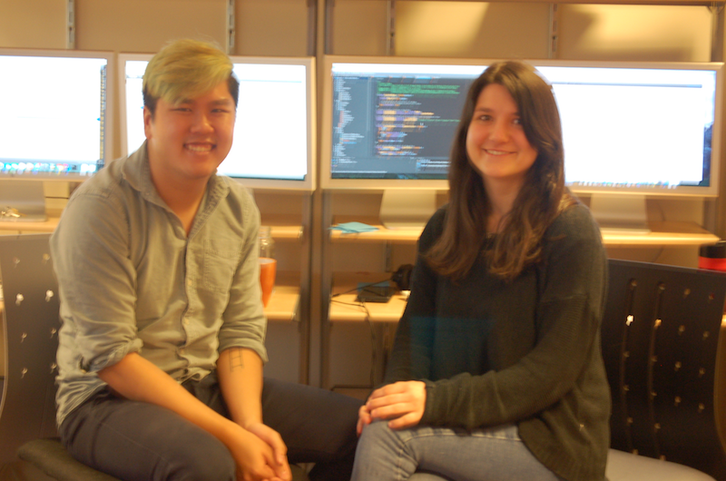
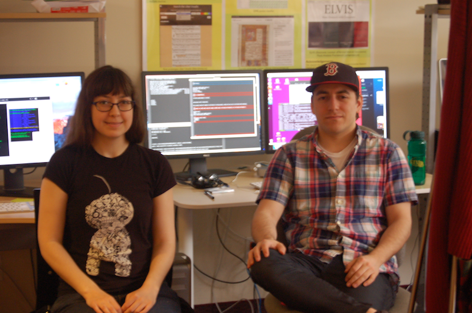
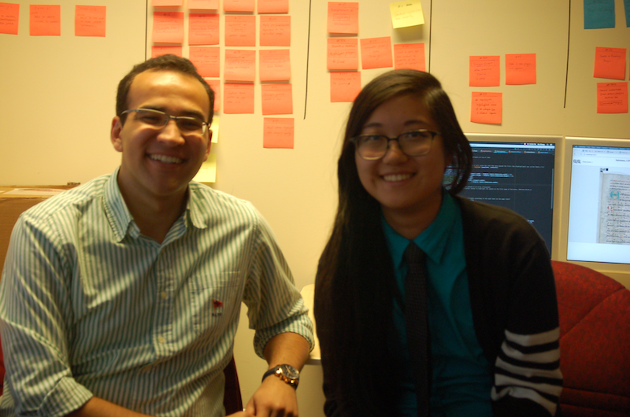

Introducing the DDMAL Summer Workers!
Posted by ehopkins on May 30, 2017
During the Summer, the SIMSSA team at McGill expands as we hire several undergraduate students to work full-time on projects over the summer. Since SIMSSA is such an interdisciplinary project, we usually attract a wide range of really interesting backgrounds and skillsets, and this year is no exception! This summer, we’re focussing on the OMR side of the project (the Content Axis) and we have six new faces in the lab, so I thought it would be fun to introduce them.

Andrew Tran (left) and Zoé McLennan (right) are working on Neon.js, a web-based editor for digitally encoded early music scores. They’re extending its current functionality, including being able to edit staffless scores.
Emily Hopkins: What appealed to you about working for SIMSSA?
Andrew Tran: As a programmer who also has a strong passion for music, I’ve always been interested in the field of music technology. After doing the MAT minor at McGill, I was extremely excited to work in a lab that has a strong focus in both fields of study.
Zoé McLennan: As soon as I heard about SIMSSA, I was immediately draw to the multidisciplinary nature of the project. Coming from a multidisciplinary background myself, I was very excited to come across a project that had such a diverse team of people from different backgrounds working on such an interesting project.
EH: What’s your background, both in terms of school and outside interests?
AT: I’m studying Software Engineering at McGill. I have a lot of other hobbies I work on, including game dev, recording, competitive gaming, and even running a club about the game of mafia!
ZM: I am going into my 3rd year as a Music Student studying Jazz Bass with a music technology minor in Music, Science and Technology. I have also applied to the Computer Science program and hopefully as of next year I will be doing a double major.
EH: What’s another interesting project you’ve worked on?
AT: Over the last year, I worked on the CAVE project with Jeremy Cooperstock. This project aimed to further push the field of virtual reality by way of haptic feedback through floor tiles. It was a complex system that required knowledge of Max, Unity3d, and a lot of hardware. Read more at http://srl.mcgill.ca/projects/niw/.
ZM: A very fun project I recently worked on was for the music technology course MUMT307. I made a chorus effect using Max/MSP that could be used to implement the “Call and Response” musical tradition found in traditional Quebecois music and many other cultures.

Sacha Perry-Fagant (left) and Alex Daigle (right) are developing the Gamera Interactive Classifier web application. This program is a key part of training our OMR process. Human users create classes of musical symbols and identify them in a given subset of a score, and the classifier can use that to label the rest of the score, or a new score in a similar style.
EH: What appealed to you about working for SIMSSA?
Sacha Perry-Fagant: Arts and sciences are usually treated as if they are completed unrelated so it’s exciting to see research that incorporates both, especially since the research done will result in a powerful tool for musicologists.
Alex Daigle: The synergy between music and technology, because I get to combine my love of coding and music together.
EH: What’s your background, both in terms of school and outside interests?
SP-F: I am studying physics and computer science. I studied voice for several years before coming to McGill where I am now a member of the choir Les Muses Chorale. In my free time I also enjoying video editing and writing.
AD: I have two undergrads (B.A. in Mus. and B. Mus.) and I’m a self taught programmer. This fall, I’m starting my Master’s in Music Technology at McGill, and in my spare time I teach drumset performance, produce music and create simple animations in After Effects.
EH: What’s another interesting project you’ve worked on?
SP-F: Using python, I did a research project which examined statistical properties of galaxy clusters in order to understand more about the process of their evolution.
AD: I wrote some programs that used the Twitter, Instagram, and Facebook APIs to help market and grow social media accounts.

Zeyad Saleh (left) and Ké Zhang (right) are developing Pixel.js, a layering tool for sheet music images, which will be used to facilitate labelling ground-truth data for the machine learning algorithm that classifies different parts of musical scores. Pixel.js will be built as a layering plugin on top of SIMSSA’s Diva.js, so Ké and Zeyad will be developing that project as well.
EH: What appealed to you about working for SIMSSA?
KZ: At first I was drawn to how SIMSSA combines what I consider a hobby with academics. It is particularly interesting how diverse the components within SIMSSA are. It felt like I stumbled upon a whole new sphere in the music field I was apparently oblivious to. I couldn’t wait to explore it.
ZS: I have always wanted to combine the skills I gained from my computer engineering studies with my passion for music, and SIMSSA was definitely the best match! I was also very excited to work with people who share the same interests as I do in music and technology. Lastly I knew that this would be a great opportunity to gain new skills and work with technologies that I haven’t had the chance to work with before such as javascript which is currently the basis of my work.
EH: What’s your background, both in terms of school and outside interests?
KZ: I recently completed my second year of Software Engineering at McGill University. In my free time I enjoy teaching classical piano and have been playing the instrument for over 15 years.
ZS: I am a computer engineering student with a minor in biomedical engineering. My passions are music and filmmaking. I am currently a member of an oriental music quartet called Ouditar and I enjoy it a lot!
EH: What’s another interesting project you’ve worked on?
KZ: Recently I have been actively participating in game development competitions because it gives me the chance to work on the design of the audio and programming logic components of a same project. These experiences have pushed me to start the development of an audio-based game, without graphics, targeting visually impaired users.
ZS: I have worked on a couple very interesting projects such as building a mars rover with McGill Robotics, integrating simulated avionics suite into a business jet’s virtual simulator, an iOS app that uses machine learning to classify emotions using physiological signals. But the most interesting one was an award-winning Android app that detects sleepiness and alerts truck drivers during times of loss of concentration. It does that using the muse EEG headband and using the pebble watch to vibrate when that happens.